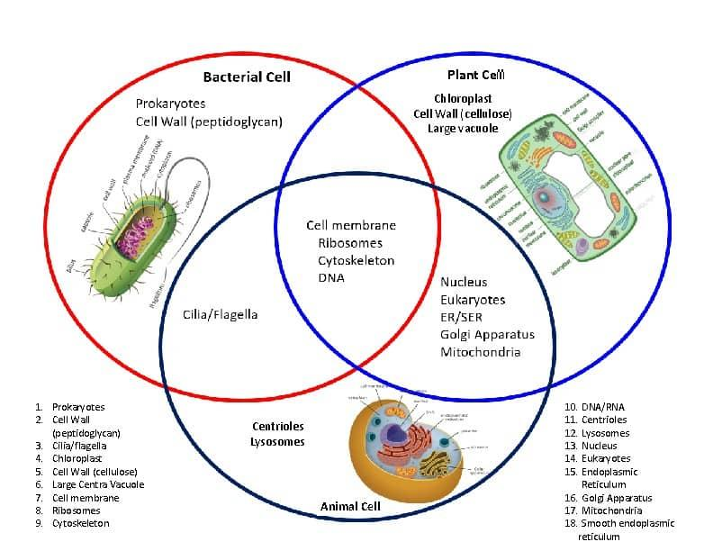
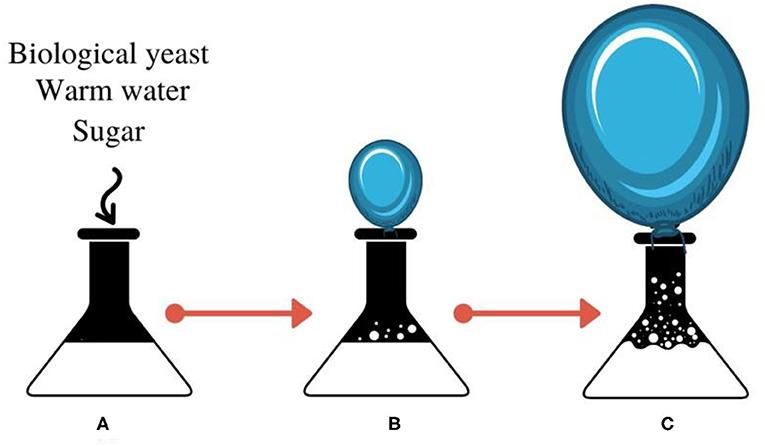
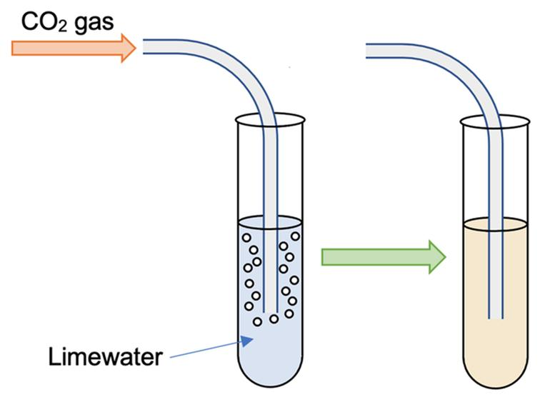
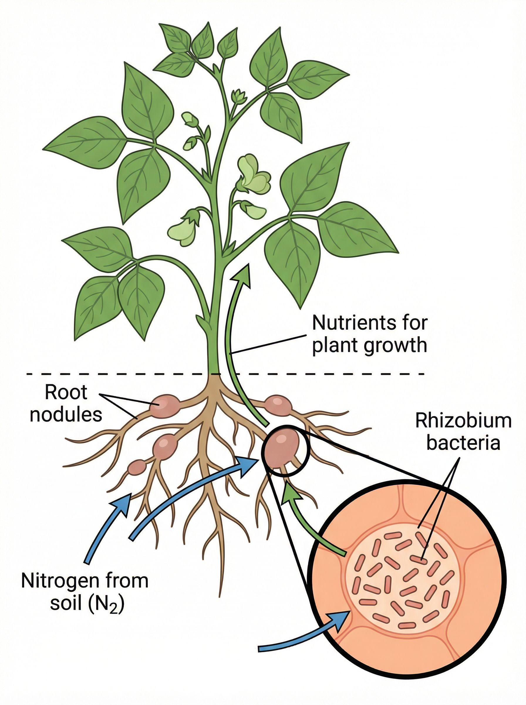
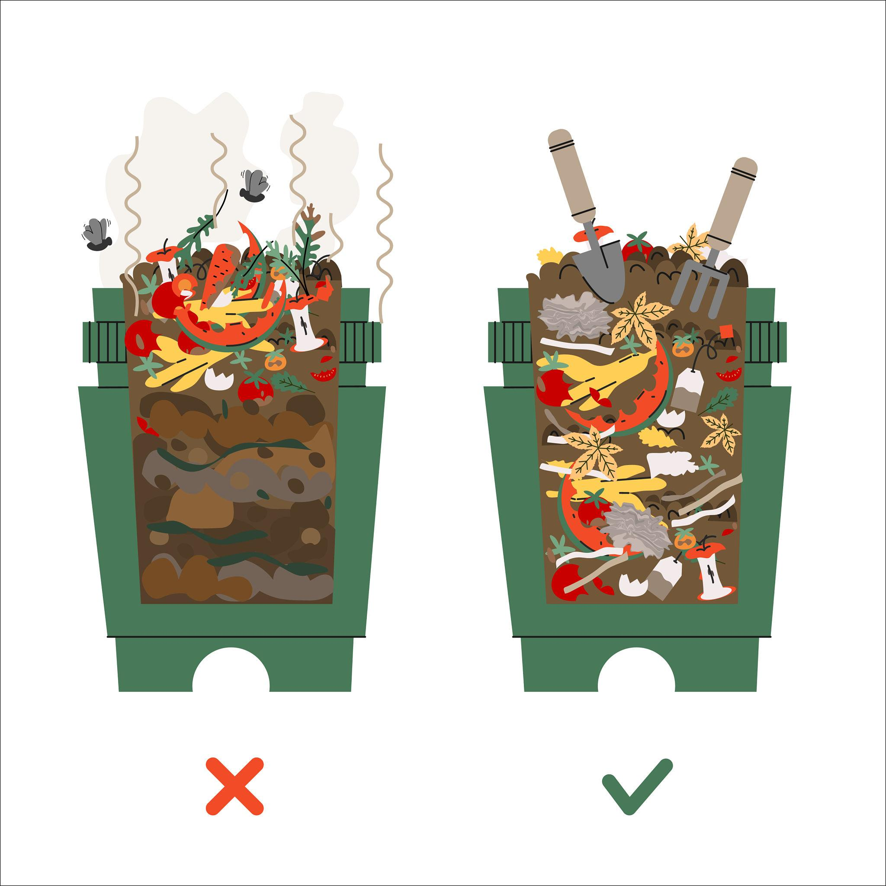
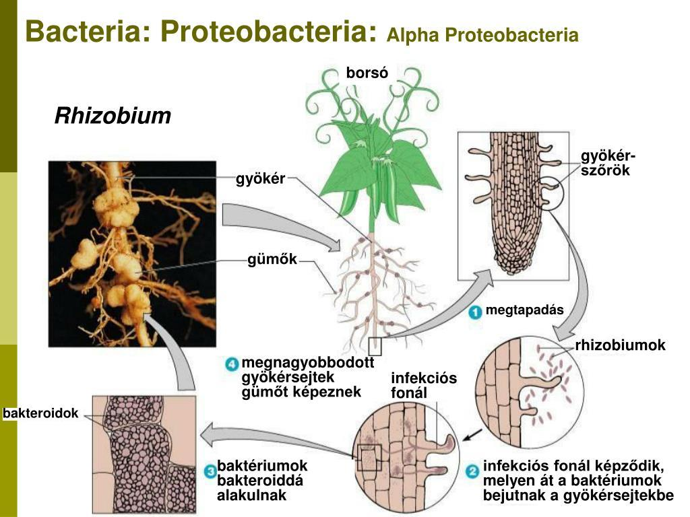
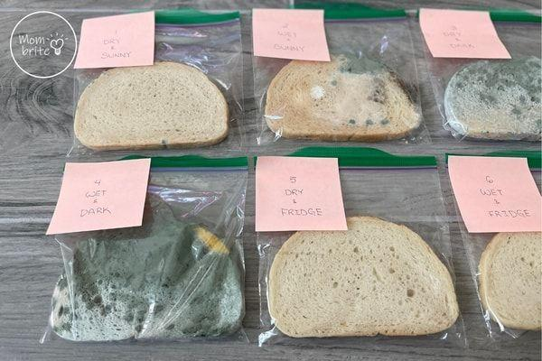
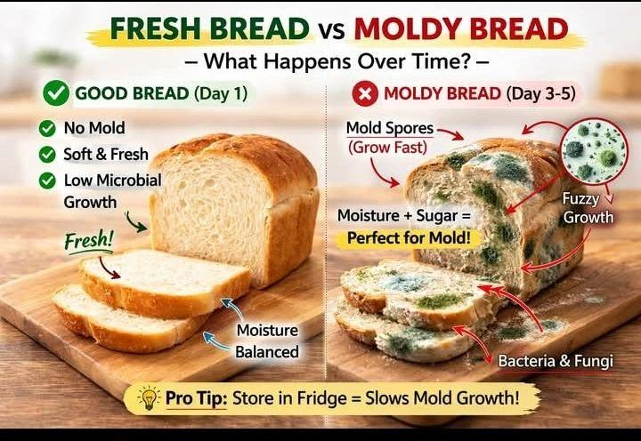
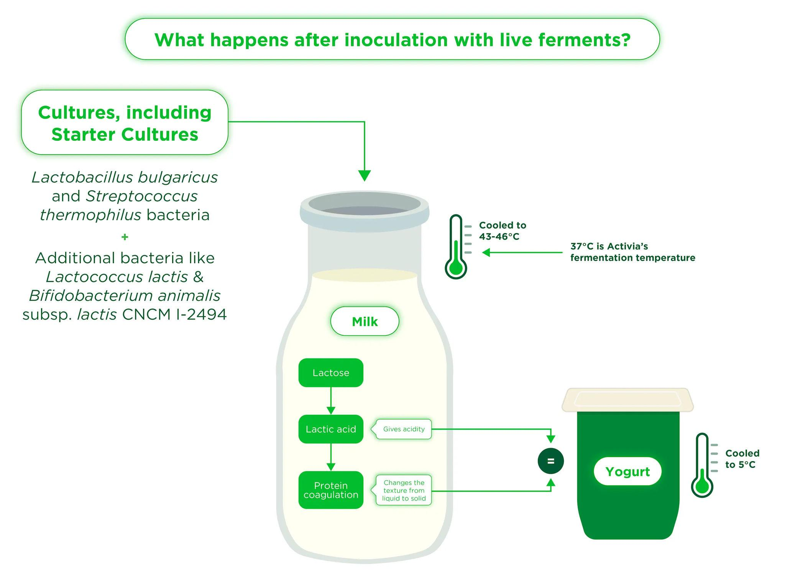
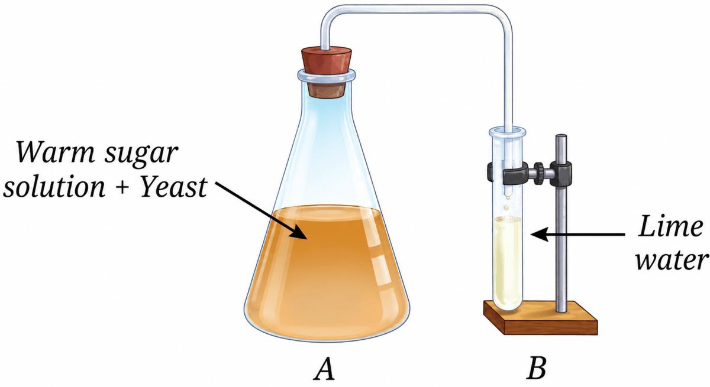

📘 Chapter 02: invisible living world beyond our naked eye – Questions and Answers
1. Identify the Parts of Different Cells
Question 1. Various parts of a cell are given below. Write them in the appropriate places in the diagram.
Answer: The cell parts should be placed as follows:
- Nucleus: Found in plant and animal cells.
- Cytoplasm: Found in all three types of cells.
- Chloroplast: Found only in plant cells.
- Cell wall: Found in plant and bacterial cells.
- Cell membrane: Found in all three types of cells.
- Nucleoid: Found only in bacterial cells.

Note: The nucleus is absent in bacterial cells. Bacteria have a nucleoid region instead.
2. Answer the Following Questions About Yeast Fermentation
Question 2. Aanandi took two test tubes and marked them A and B. She put two spoonfuls of sugar solution in each test tube. In test tube B, she added a spoonful of yeast. Then she attached two incompletely inflated balloons to the mouth of each test tube.
(i) What do you predict will happen after 3–4 hours? She observed that the balloon attached to test tube B was inflated. What can be a possible explanation for this?
Answer: The balloon attached to test tube B will inflate because yeast produces carbon dioxide gas during fermentation.
Correct option: (c) Yeast produced a gas inside test tube B, which inflated the balloon.

(ii) She took another test tube, 1/4 filled with lime water. She removed the balloon from test tube B in such a manner that the gas inside the balloon did not escape. She attached the balloon to the test tube with lime water and shook it well. What do you think she wants to find out?
Answer: She wants to find out whether the gas produced by yeast is carbon dioxide.
Carbon dioxide turns lime water milky. This confirms the presence of carbon dioxide gas.

3. Answer the Following Questions About Nitrogen Fixation
Question 3. A farmer was planting wheat crops in his field. He added nitrogen-rich fertiliser to the soil to get a good yield of crops. In the neighbouring field, another farmer was growing bean crops, but she preferred not to add nitrogen fertiliser. Can you think of the reasons?
Answer: Bean plants belong to the legume family. Their roots contain small nodules with bacteria called Rhizobium.
These bacteria fix atmospheric nitrogen and make it available to plants. Therefore, bean plants need less nitrogen fertiliser.

Conclusion: Rhizobium bacteria help improve soil fertility by fixing atmospheric nitrogen.
4. Answer the Following Questions About Compost Formation
Question 4. Snehal dug two pits, A and B, in her garden. In pit A, she put fruit and vegetable peels and mixed them with dried leaves. In pit B, she dumped the same kind of waste without mixing it with dried leaves. She covered both the pits with soil and observed them after 3 weeks. What is she trying to test?
Answer: She is trying to test the role of dried leaves in the decomposition of organic waste and compost formation.
Dried leaves provide dry organic matter and help maintain air spaces in the compost. Microorganisms decompose organic waste and help form compost.

Conclusion: Mixing dried leaves with fruit and vegetable waste helps in proper compost formation.
5. Identify the Following Microorganisms
Question 5. Identify the following microorganisms:
(i) I live in every kind of environment, and inside your gut.
Answer: Bacteria.
(ii) I make bread and cakes soft and fluffy.
Answer: Yeast.
(iii) I live in the roots of pulse crops and provide nutrients for their growth.
Answer: Rhizobium bacteria.

6. Design an Experiment to Study the Growth of Microorganisms
Question 6. Design an experiment to test that microorganisms need optimal temperature, air, and moisture for their growth.
Answer: We can perform the following experiment using bread slices.
Materials Required: Four bread slices, four plates or containers, water and a refrigerator.
Procedure:
- Take four equal pieces of bread.
- Keep the first piece slightly moist in a warm place with access to air.
- Keep the second piece in a refrigerator.
- Keep the third piece in a dry place.
- Keep the fourth piece in a warm, moist and airtight container.
- Observe all the bread pieces for a few days.
Observation: Microorganisms grow better on bread kept in a warm and moist place with access to air.
Conclusion: Microorganisms need suitable temperature, moisture and air for their growth.

Note: Do not touch or smell mouldy bread directly. Observe it in closed containers under adult supervision.
7. Bread Mould Experiment
Question 7. Take two slices of bread. Place one slice in a plate near the sink. Place the other slice in the refrigerator. Compare them after three days. Note your observations. Give reasons for your observations.
Answer:
Observations:
- The bread kept near the sink may develop green or black patches of mould.
- The bread kept in the refrigerator shows little or no mould growth.
Reason: Warm and moist conditions near the sink help microorganisms grow quickly. Low temperature inside the refrigerator slows down their growth.

Conclusion: Temperature affects the growth of microorganisms.
8. Answer the Following Questions About Curd
Question 8. A student observes that when curd is left out for a day, it becomes more sour. What can be two possible explanations for this observation?
Answer:
- Bacteria present in curd continue to produce lactic acid.
- Warm temperature helps bacteria multiply and produce more lactic acid.
Therefore, curd becomes more sour when left outside for a long time.

Conclusion: Bacterial activity increases the sourness of curd due to the production of lactic acid.
9. Observe the Experimental Set-up and Answer the Following Questions

Question 9. Observe the set-up given in Fig. 2.15 and answer the following questions.
(i) What happens to the sugar solution in flask A?
Answer: Yeast ferments the sugar solution and produces carbon dioxide gas and alcohol.
(ii) What do you observe in test tube B after four hours? Why do you think this happened?
Answer: Lime water in test tube B turns milky because carbon dioxide gas produced in flask A passes through it.
(iii) What would happen if yeast was not added in flask A?
Answer: Fermentation would not take place. Very little or no carbon dioxide would be produced, so the lime water would remain clear.
Conclusion: Yeast converts sugar into alcohol and carbon dioxide during fermentation. Carbon dioxide can be identified using lime water.
10. Important Terms to Remember
| Term | Meaning |
|---|---|
| Yeast | A microorganism used in baking and fermentation. |
| Bacteria | Microscopic organisms found in many environments. |
| Rhizobium | Bacteria that fix atmospheric nitrogen. |
| Fermentation | The process in which yeast breaks down sugar and produces alcohol and carbon dioxide. |
| Compost | Organic manure formed by the decomposition of organic waste. |
| Lactic Acid | An acid produced by bacteria during curd formation. |
| Lime Water | A solution used to test carbon dioxide gas. |
| Microorganisms | Very tiny living organisms that usually cannot be seen with naked eyes. |
11. Quick Revision – Important Points
- Microorganisms are very tiny living organisms.
- Some microorganisms are useful, while others are harmful.
- Yeast is used in bread and cake making.
- Yeast produces carbon dioxide during fermentation.
- Carbon dioxide turns lime water milky.
- Rhizobium bacteria live in the root nodules of leguminous plants.
- Rhizobium fixes atmospheric nitrogen.
- Microorganisms help in the decomposition of organic waste.
- Warm and moist conditions favour the growth of many microorganisms.
- Low temperature slows down the growth of microorganisms.
- Lactic acid makes curd sour.
- Microorganisms play an important role in our daily lives.
MCQ Quiz
अध्याय के वस्तुनिष्ठ प्रश्नों का अभ्यास करें।
MCQ Quiz शुरू करेंPDF Notes
इस अध्याय के नोट्स PDF में पढ़ें या डाउनलोड करें।
📄 View PDF ⬇️ Download PDF